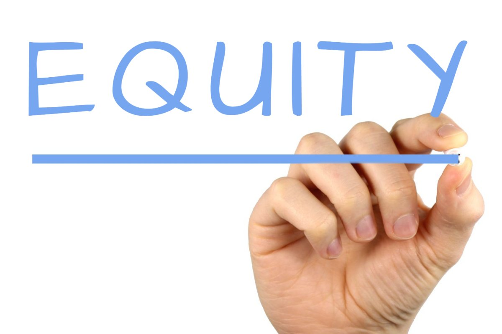

All rivers flow: dynamic approach to splitting your equity shares.

All rivers flow, and all rivers change. Do you adapt to an ever-changing state? How do you decide how equity should be split in your company?
Startups and companies are going through tremendous evolution during the first years of their existence. It can completely overhaul and change ideas, focus, working style, product and even founders. Speaking geometrically, a triangle can literally take the shape of a cube in the entrepreneurial world. How does one decide how to deal with an equity split in such conditions?
Seasoned entrepreneur Jason S. states: Equity split is based on the value and time that each person brings to the table. Value is based on cash invested and how much income they could make in a relevant position as an employee in another company. I.e. a software engineer should get more ownership than an executive assistant all else being equal.
There are two options of tracking value and equity allocation: Fixed and Dynamic. Take a look at both approaches in greater detail.
(1) Fixed approach gets every single member a fixed amount of shares. For example, three founders split the company's ownership according to some logic and it is 40%, 35% and 25%. Then they bring someone new into the company, his or her amount of shares is set in stone according to the position. Possibly 5%. Then this share has to be taken from existing shareholders thereby diluting the share held. Perhaps it will be 38%, 33%, 24% and 5%.
(2) Dynamic approach allocation will convert members productivity and contribution into Equity Share ownership. This approach takes into consideration many factors on an ongoing basis, as often as weekly or monthly as follows:
- Hours worked
- Milestones completed
- Cash invested and contributed
- Hours worked converted based on the person’s market value (compensation)
- Ownership decreases or increases based on individual contribution
- Shares of those who leave the company will be diluted over time to other members
The team is able to vote to determine successful completion of the tasks (in monthly reviews).
Your shares will decrease if you procrastinate, and increase, if your performance is above average. It will allow your company to be at the peak performance and fair towards its members.
Here is the real story:
A startup owner hires a CEO that gets fired 6 months later due to simply not showing up and doing his job. It was stated in the documents that he gets X% of the company shares irrespective of changes or fixed allocation. They made a mistake in this agreement, because the amount was large enough to control the company even though this CEO was no longer part of it.
The owner had to engage lawyers to take control of the situation which means completely wasted time and money.
What would have happened if they used a dynamic approach?
- They would have a good understanding of every member's performance from day one including this particular individual. Each person starts with zero ownership and only ongoing contribution will translate into shares ownership over time.
- If this CEO contributed at the beginning and then stopped contributing, the amount of shares would have decreased to none at this point.
This problem can be prevented from ever coming up in the first place. Nobody wants to pay for nothing, don't you agree?
We are curious to hear your equity ownership situation stories. Did you have similar issues and if you did, how did you resolve them? Do you use a specific system that works for you?
***
Jack of all trades or specialist - What is my responsibility in the startup?
The holidays are coming with the smell of ginger cookies and the aroma of pine trees. It is a good time to relax, enjoy a cup of hot tea, think about what goals to achieve and what to focus your team on during next year.
What are the responsibilities of the king?
Who??? Yes, you heard it right.
The person who governs his kingdom and decides whether to declare a war or sign a peace treaty. Isn't it what exactly happens when you get a big C-type title?
Freedom comes with self-formulated rules, discipline and clearly outlined responsibilities.You know now what your boss felt when you were just an employee on your previous job. He had to keep it running 7 days a week, thinking about short time goals and long time perspectives. It's your turn to be the boss.
Here are our blocks of recommendations:
- You can be the expert. Perhaps you are the Michael Jordan of programming, and have 100% focus on one type of work. Or you can have 3-5 different skills with around 70-80% of the expected professional expertise knowledge in each skill and become a generalist. Understand what works better for you and your teammates. Most company founders are excellent generalists.
- Stick to your expertise, and always be ready to help your partner and expand your knowledge. Each person has certain skill sets and inclinations. It's reasonable to assign work to the person who will quickly deliver quality work in a certain field.
Whether you are a generalist or specialist certain rules are universal:
- Own the project. Own your work. Concentrate all your abilities and efforts on the task at hand, not worrying about the next job or promotion. Do your work. Let your results speak for you.
- Have a clear understanding of how your application and your business will be working. It will make your everyday decisions and work prioritization easier.
- Think of the long term impact while working on your assignment. Design and outline the architecture of the whole project before starting to work on your assignment.
- Set reasonable weekly tasks. Deliver them and review what was done at the end of the week.
- Be ready to work extra hours and be flexible to work when time is available. As Benjamin Disraeli said: “Action may not always bring happiness; but there is no happiness without action”.
- It's not only adding new work that adds results. The elimination of non-essentials from your “to-do-list” is a vital factor in great achievement. Do what is essential — because most of what we say and do is not essential. Focus on work that matters and produces results. Nothing is worth doing pointlessly.
- Don`t be afraid to learn new concepts. Implement new technologies. Why not if it saves time and makes your product better.
- Even if it goes against the mainstream of a typical startup. What is a typical startup anyway?
And, lastly: do not try to behave like a tyrant. Look for your own progress, not others’ mistakes.
Do not aim for absolute monarchy, too much control historically has ended up in revolution and the overthrowing of the ruling house.
Are you generalist or specialist? How do you decide what tasks you should be working on?
Have a warm holiday season!
Happy New Year!
***
Agent provocateur
You truly believe everything is under control. Engine just got engaged. Success is inevitable. However, there is one factor you never thought of, the one that can ruin your vessel from inside.
In our previous post we tried to give startup founders a heads up on basic preparation. We presented a list of checkpoints to set before getting the enterprise going.
A team’s dynamic can be as follows:
- there is one person inspired by an idea, the leader (usually the one who created it), with the rest following.
- there can be two or more leaders and the rest are followers
- then there could be a mix and match, of course
The followers could also be full of energy and share the vision for the future, but they are not always ready to go all the way. So what are your agent provocateurs, or provoking agents?
[provocateur. Noun. (plural provocateurs) One who engages in provocative behavior. An undercover agent who incites suspected persons to partake in or commit criminal acts.]
- The momentum is gone. Once the implementation (or discussion) takes too long, or the idea does not seem to be feasible anymore, their level of enthusiasm lowers down dramatically. There is no focus on important aspects such as keeping customers satisfied with your product, revenue growth and constant revisions of what works and what doesn't.
- Individuals do not share the same goals and are not open about it. Another scenario might describe the case when one of the founders follows his own “secret ”plan, different from the one the team originally had agreed on. It results in team members blaming each other which creates a negative atmosphere within the company.
- Too many things to focus on. Your third obstacle is a lack of focus. Not following the implementation plan, a desire to fix it all at the same time, or randomly switching topics is a symptom for this disease. There are too many things that have to be done. Focusing and eliminating non-essential distractions can allow your startup to survive and prosper.
- Not having a clear framework of how everyone gets paid and rewarded. There are many examples when people cannot agree on their contributions and their equity share which results in heated discussions or even arguments while there is no focus on product building.
What are the fundamental remedies? We recommend you to consider the following:
- An excellent team is the core element and should be the key pillar for a great startup and the leadership base of a future company. You would start looking for team members from your inner circle:
- colleagues
- reliable business partners
- friends
- and possibly relatives
- Try to imagine your future co-owner`s behavior in a very stressful situation. What does it take to make him lose control? Expect that this is a pattern and it will potentially repeat in the future. Eliminate negative people right away. You can't change them and it will only slow you down.
- Establish a transparent equity sharing framework which is adjusted based on continuous contribution and work by participants.
- How much guidance do other members of the group need? Be clear about it and accept it.
- We all believe in equal partnership, but successful startups have someone who can consolidate the team.
- A company should have a healthy culture, be transparent and avoid talking behind other people's backs.
- The tiniest misunderstandings or issues have to be openly discussed and solved. Make sure to address difficult issues and don't let them build up. This leads to increased conflicts later.
- Plan your development as a company and follow it accordingly. Long term goals are made of 3-5 year plans. 3-5 year plans are made of 1 year plans which are made of 1-3 month plans. Success can be reached by making small and focused achievements.
Please add more points from your experience.
Share your knowledge in the comments.
***
Minus one: your partner left the company.
Remember the time, when you enjoyed a cup of coffee with your partner, discussing the exponential growth of the company?
One Person might no longer be interested in the project, disagreeing on how things have to be done, have no time to allocate to business or might be fired. Your partner put time and money in the business, or even brought some equipment that is essential to the company. Now they want it back, or at least a portion of it.
- How do you handle such a conversation?
- How do you prevent this situation? Or make it smooth?
- What do you do about money and time invested?
Remember each situation is different and has to be approached accordingly. To be ready for that, here is the list of things you prepare for yourself as a business owner and your partner prior to starting working together:
- It is a very unpleasant conversation you might face if this unhappy eventuality was never discussed. Be direct, polite and fair. Many people cannot handle such a conversation, so it's up to you to do it well, be clear, honest and transparent. Manage it as if you have to work with this person again. Think long term and don't avoid it.
- Plan for it and discuss it. Most importantly, work with people who can have an open mind, are ethical in business (read: you can trust) and able to handle such a situation logically. Good staff is the best asset that the company can have. Start-up companies are moving fast, change fast and adopt change. Work with people who can move and learn as fast as well.
- It is a good idea not to just discuss, but confirm those statements in writing to avoid future misunderstanding. Will all partners be putting an equal amount of money into the project? Are the finances spent non-refundable? How much time are you willing to allocate? What about your team? What if the company needs to continue using the finances? Are there possible rental or buyout options?
These are some measures that can be taken at the beginning of a venture to establish ground rules and procedures to follow:
- Discuss what is going to happen if someone leaves the team after the first day since the start-up was founded or the first day since they joined
- Sign a contract
- Establish a vesting period of 2 years and if the person leaves prior to that deadline they forfeit their share
- Should the company compensate a quitting team member if the person did not contribute financially?
- Should time invested, ideas and intellectual property be considered company property?
- Supplies and equipment becomes company property
- If equity was calculated using cash multipliers (4x multiplier) then discount cash to its original value. If possible then return the cash contributed back to the person leaving your team
- For how long should a quitting member have the right to buy equity back
- Remember that the startup will have no obligations to any person who leaves the team
- The important aspect is to be fair to everyone
It is important to understand that the company is losing other assets as well, not only the person who is leaving the company. It is slowing business growth and development until a newly recruited person joins the team. Then it takes time to orientate and settle the new person, establish a working relationship and mutual goals and objectives.
What would you add to the list? Please share your thoughts.
***
How do you share equity in your startup?

After talking to numerous entrepreneurs we discovered that equity sharing is an ongoing problem and several recurring headaches stand out :
- Startups fail before launching their product
- Most new companies are facing this issue
- There is no comprehensive and direct solution to address it
We experienced it ourselves and at first we could not find a straightforward approach on how to split equity between the team members.
Cohesive Bits is a team of passionate professionals and friends who are working on defining equity share among members of startup companies. Our goal is to create an application that measures your team members’ productivity and help you slice the pie according to every member’s contribution.
We would like to hear you opinion on this topic. At what point in your company's development did the question of equity sharing come up? What was the toughest topic to discuss and the most difficult issue to solve? Please share your stories.
***
Recent Posts
-
All rivers flow: dynamic approach to splitting your equity shares.
Posted on 01/15/17 - Posted on 12/31/16
- Posted on 12/16/16
- Posted on 12/11/16
- Posted on 12/04/16